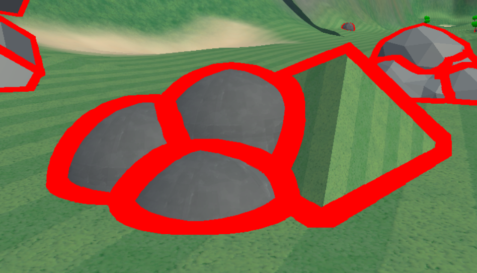
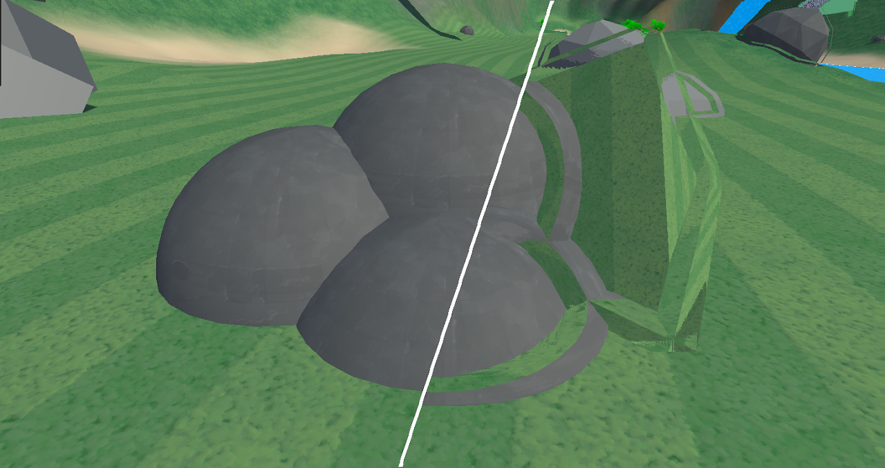
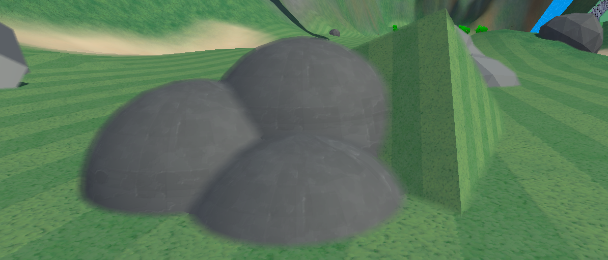

Idea
When putting meshes/objects together in games the seam between them can look very jarring. This is especially the case with objects used for terrain. By merging and blending edges together seams look way smoother and more realistic.

But how do we blend objects together in a game engine?
First lets think about how you would create a transition in 2d.
To create a transition in 2d you would overlap the 2 images and then smoothly blend the edge so
it transitions in between the 2 images
In 3d this creates a problem though since we cannot overlap our pixels like that without very complex
rendering of our scene.
To solve this problem we mirror both sides of the image across and then blend, That way we do have
color on the other side of the seam.

Seam detection
This technique relies on knowing where the seams between meshes are, so we need a system to be able
to detect this.
We could rely on g-buffer info such as checking if the normals of the surface changes but that would
also smooth intended seams on meshes themselves.
The technique I used is generating a ID for every object, there are a lot of ways to do this since i
am implementing this in Unity the simplest way is adding a render pass.
For this pass I set every objects shader to a shader that hashes its position into the color as an id then draw that pass to a render texture
// ObjectIDShader
// HLSL:
float Hash(float3 p)
{
p = frac(p * 0.3183099 + 0.1);
p *= 17.0;
return frac(p.x * p.y * p.z * (p.x + p.y + p.z));
}
half4 frag(Varyings input) : SV_Target
{
float3 normal = normalize(input.normalWS);
float3 objectPosition = unity_ObjectToWorld._m03_m13_m23;
float hashValue = Hash(objectPosition);
return half4(hashValue, 0, 0, 1);
}If you draw this to a screen This should get you something like this:
Now that we have a id per object detecting seams is pretty straight forward. In a post process shader we run a kernel that detects if the id changes
// SeamDetectionPostProcess
// HLSL:
int _KernelSize;
float _KernelRadius;
half4 Frag(Varyings input) : SV_Target
{
float2 UV = float2(input.uv.x, 1-input.uv.y); // In my case i had to flip the uv
// Depth and color of the current pixel
float4 sceneColor = SAMPLE_TEXTURE2D(_CameraOpaqueTexture, sampler_CameraOpaqueTexture, UV);
float sceneDepth = Linear01Depth(SAMPLE_TEXTURE2D(_ObjectDepthTexture, sampler_ObjectDepthTexture, UV), _ZBufferParams);
// The ID we set in the first pass
float4 objectIDColor = SAMPLE_TEXTURE2D(_ObjectIDTexture, sampler_ObjectIDTexture, UV);
float4 color = sceneColor;
//Kernel, loop over all the pixels in a radius
for(int x = -_KernelSize; x <= _KernelSize; x++) {
for(int y = -_KernelSize; y <= _KernelSize; y++) {
// Divide by scenedepth to keep sample size consistent over distance
float2 offset = float2(x,y)*_KernelRadius/sceneDepth/_KernelSize;
float2 SampleUV = UV + offset; // UV location of the pixel being tested
// Test the id of the offset pixel against the middle pixel
float4 id = SAMPLE_TEXTURE2D(_ObjectIDTexture, sampler_ObjectIDTexture, SampleUV);
if (id.x != objectIDColor.x) {
color = float4(1,0,0,1); // Set the color to red if there is a seam
}
}
}
return color;
}With this you should basically have a outline shader:
Blending
Now comes the actual blending,
To be able to smoothly blend the materials we would need some overlapping texture data which you
dont really have access to in a post process. To work around this we mirror whats on the other side
of the seam.
For this we use our kernel shader, We find the point of symmetry and mirror the pixels across. To find this point we have to find the closest distance at which the object id changes
// SeamMirrorPostProcess
// HLSL:
int _KernelSize;
float _KernelRadius;
half4 Frag(Varyings input) : SV_Target
{
float2 UV = float2(input.uv.x, 1-input.uv.y); // In my case i had to flip the uv
// Depth and color of the current pixel
float4 sceneColor = SAMPLE_TEXTURE2D(_CameraOpaqueTexture, sampler_CameraOpaqueTexture, UV);
float sceneDepth = Linear01Depth(SAMPLE_TEXTURE2D(_ObjectDepthTexture, sampler_ObjectDepthTexture, UV), _ZBufferParams);
// The ID we set in the first pass
float4 objectIDColor = SAMPLE_TEXTURE2D(_ObjectIDTexture, sampler_ObjectIDTexture, UV);
float2 seamLocation = float2(0,0); // Default to current pixel if we don't find seam <changed>
float minimumDistance = 9999999; <changed>
// Kernel, loop over all the pixels in a radius
for(int x = -_KernelSize; x <= _KernelSize; x++) {
for(int y = -_KernelSize; y <= _KernelSize; y++) {
// Divide by scenedepth to keep sample size consistent over distance
float2 offset = float2(x,y)*_KernelRadius/sceneDepth/_KernelSize;
float2 SampleUV = UV + offset; // UV location of the pixel being tested
// Test the id of the offset pixel against the middle pixel
float4 id = SAMPLE_TEXTURE2D(_ObjectIDTexture, sampler_ObjectIDTexture, SampleUV);
if (id.x != objectIDColor.x)
{
float squareDistance = dot(offset,offset); // Same as x*x+y*y <changed>
if (squareDistance < minimumDistance) <changed>
{ <changed>
minimumDistance = squareDistance; // Found new closest seam <changed>
seamLocation = offset; <changed>
} <changed>
}
}
}
// Mirror the pixel on the other side of the seam
float4 otherColor = SAMPLE_TEXTURE2D(_CameraOpaqueTexture, sampler_CameraOpaqueTexture, UV + seamLocation * 2); <changed>
return otherColor; <changed>
}
This should produce a trippy effect wherein both sides of the seam are mirrored, I split the image with and without the effect for clarity
If instead of directly mirroring we lerp the colors based on distance from the seam it becomes a nice
transition,
Since we mirror on both sides of the seam we should also adjust the lerp so that the mix is 50% at
the seam and 0% at the edge of our search radius
// SeamBlendPostProcess
// HLSL:
int _KernelSize;
float _KernelRadius;
half4 Frag(Varyings input) : SV_Target
{
...
Kernel
...
// Get the pixel on the other side of the seam
float4 otherColor = SAMPLE_TEXTURE2D(_CameraOpaqueTexture, sampler_CameraOpaqueTexture, UV + seamLocation * 2 );
// This is the maximum distance where our kernel can find a seam <changed>
float maxSearchDistance = (KernelRadius)/sceneDepth; <changed>
// We subtract 0.5 to make the transition line up on the seam <changed>
float weight = saturate(0.5 - sqrt(minimumDistance ) / maxSearchDistance); <changed>
return lerp(sceneColor, otherColor, weight); <changed>
}
This should give us a nicely blended seam:
Conditions
There is one simple problem with our transitions.
They are happening even if the objects arent next to eachother so the top of the rocks are also
transitioned.
We can fix this by adding a simple check for depth to our weight
// SeamBlendPostProcess
// HLSL:
int _KernelSize;
float _KernelRadius;
float _DepthFalloff; <changed>
half4 Frag(Varyings input) : SV_Target
{
...
Kernel
...
// Get the pixel on the other side of the seam
float4 otherColor = SAMPLE_TEXTURE2D(_CameraOpaqueTexture, sampler_CameraOpaqueTexture, UV + seamLocation * 2 );
float4 otherDepth = Linear01Depth(SAMPLE_TEXTURE2D(_ObjectDepthTexture, sampler_ObjectDepthTexture, UV + seamLocation * 2 ), _ZBufferParams); <changed>
float depthDiff = abs(otherDepth-sceneDepth); <changed>
// This is the maximum distance where our kernel can find a seam
float maxSearchDistance = (KernelRadius)/sceneDepth;
// We subtract 0.5 to make the transition line up on the seam
float spatialWeight = saturate(0.5 - sqrt(minimumDistance ) / maxSearchDistance); <changed>
float depthWeight = saturate(1.0 - depthDiff / _DepthFalloff*_KernelRadius); <changed>
float totalWeight = (depthWeight+spatialWeight)*0.5; <changed>
return lerp(sceneColor, otherColor, totalWeight);
}
This creates our final effect
Improvements
In this article I went over a simpler way to implement this but it is very slow and has some artifacts.
There are a lots of improvements still left to be done which i will not cover in this article, here are some examples:
- Compute, There are a lot of performance benefits available if you port this to compute, for example by running a cheap masking pass you can only run the expensive search on pixels with edges.
- Better searching, A search kernel is a very limited way of searching and there are way better ways like a spiral pattern that refines over multiple iterations.
- Custom id's using material property blocks you can set custom id's for objects allowing you to control what blends with what or even blend sizes.
- Normal-based filtering,adding a check for normal difference, This fixes transitioning happening around corners or weird angles.
- Multiple-seam support,adding support for detecting multiple seams this fixes incorrect blending when more than 2 objects intersect at a point
Source code/Implementation
An open implementation of this code is available for free on the Unity Asset Store:
Free & Open - Asset StoreThere is also a paid version which implements most of the improvements mentioned above and more
Pro (Paid) - Asset Store